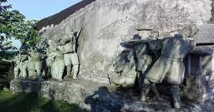

Bamuni hills

Tezpur is a city and Urban Agglomeration and the administrative headquarters and municipal board of Sonitpur district in the state of Assam in northeastern India. Tezpur is a fast growing City on the banks of the river Brahmaputra and is the largest of the north bank towns with a population exceeding 100,000. It is 175 kilometres (109 mi) northeast of Guwahati, considered to be the "Cultural Capital of Assam". Tezpur is also known as the Most Clean City of Assam because of its clean and green view. Tezpur attracts every visitor who comes here with its beautiful parks, hillocks, sceneries and well

HOW TO REACH ?
Nearest Airport: Guvahati
<
Nearest Railway Station:Tezpur
Nearest Bus Stand:Tezpur